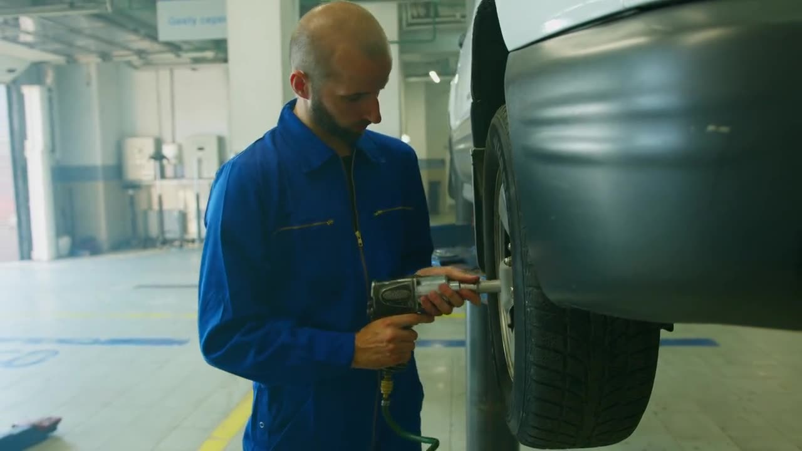
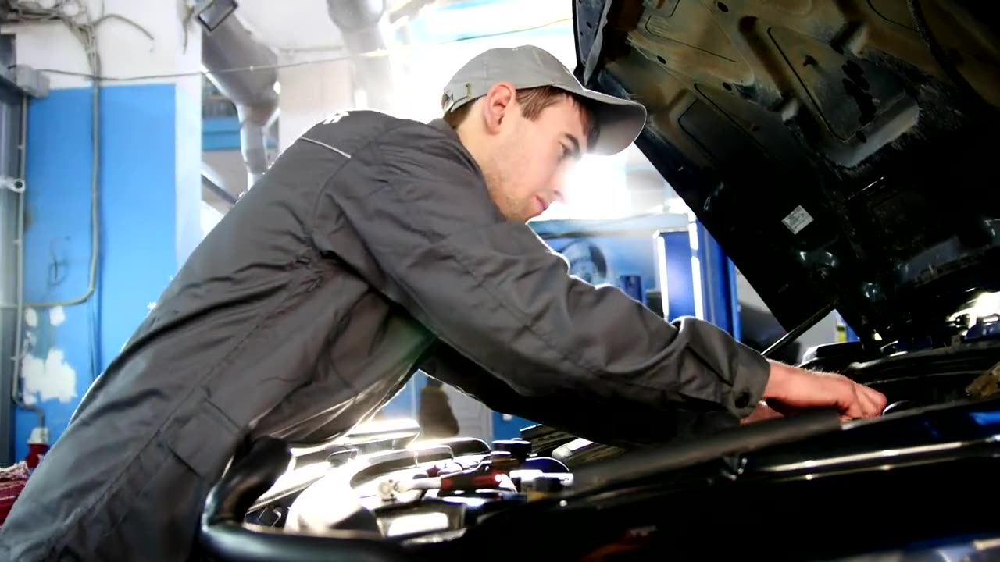
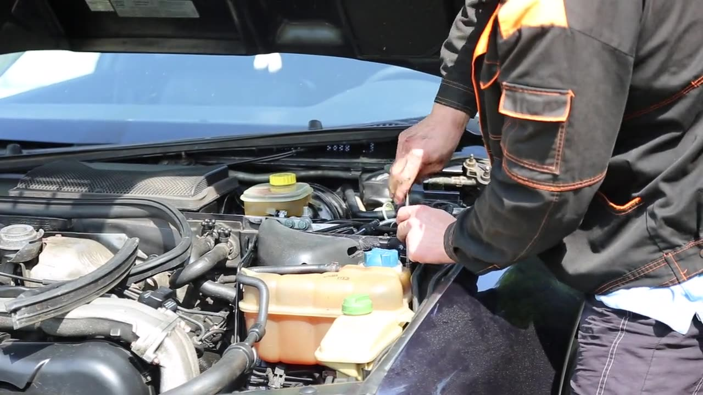

Radiator, A/C & hose shop in Paducah, KY · since 1949
Auto, truck, industrial and agricultural radiators, auto air conditioning, and custom-built brake and hydraulic hoses on Jefferson Street.



Cars, light trucks, tractors, equipment, street rods and ATVs.
Sales and repair of auto, industrial and agricultural radiators, oil coolers and charge-air coolers, including plastic-tank and aluminum-core radiators.
Water pumps, intake gaskets, heater cores and cooling system pressure flushes on cars and light trucks.
A/C repair and charging, plus building and rebuilding A/C hoses.
DOT-approved auto and truck brake hoses, custom brake hoses for street rods, motorcycles and ATVs in rubber or stainless braided, custom-bent steel hydraulic tubes and power steering hoses.
Curtis Langston founded Paducah Radiator in 1949. In 1984 his son David took over and added auto air conditioning to the service menu.
Since then the shop has added a Tubes & Hoses business and a Brakequip brake hose distributorship, so it can bend steel lines and build hoses in-house.
825 Jefferson Street, Paducah.
Paducah and Western Kentucky.